← 返回阅读库 · 原论文目录
论文讲解阅读文档 · 内容生成 · v004
A Good Image Generator Is What You Need for High-Resolution Video Synthesis
视频时长 00:14:05；讲解文字 7,221 字符；提取讲解画面 43 张。按视频原顺序阅读，每段文字保留时间戳。
文字来自整段视频的自动语音转写，按自然停顿分段，并与 PPT / 论文页面 / 演示画面对齐。未将讲解压缩为摘要；术语、数字和口述公式请结合画面及原论文核对。 阅读稿已校正规范部分明确术语误识别；原始逐字稿和每处修改记录另行保留。
讲解画面为源视频截图（640×360），不是可编辑 PPT 文件。全片按每秒 2 帧扫描内容变化，逐步展开页保留；连续动画保留代表画面。清晰度受源视频限制。
下载完整资料包 · 含离线 HTML、PDF、Word、全部 PPT 画面和字幕。
原论文与材料
A Good Image Generator Is What You Need for High-Resolution Video Synthesis · 下载完整 PDF（23 页）
按时间阅读
00:00:00–00:00:11 · 画面 001
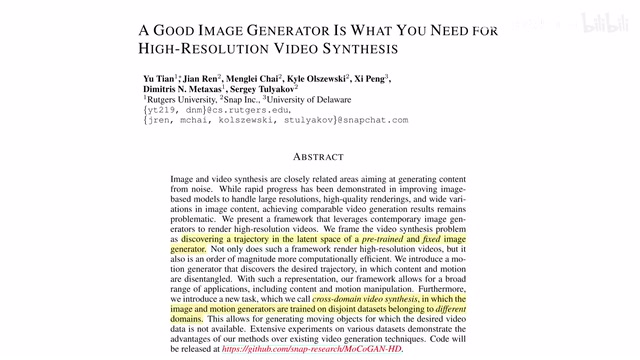
00:00:00–00:00:11 · 画面 001大家好,今天我们来介绍一篇有意思的工作 A good image generator is what you need for high-resolution video synthesis 这篇论文你从题目中就可以看出来它是用一个 image generator 去做了 video generator 看到这里 X3D Network 点了一个赞那么在今天的视频里面我们会从 Intuition 开始讲起然后介绍一下本文提出的网络的各个物件那么最后是作者汇报的一些结果
00:00:11–00:00:12 · 画面 002
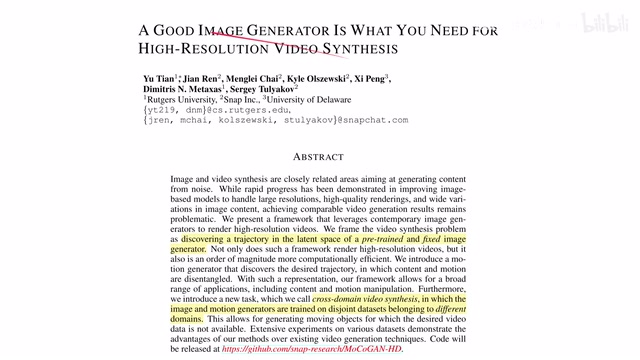
00:00:11–00:00:12 · 画面 00200:00:12–00:00:19 · 画面 003
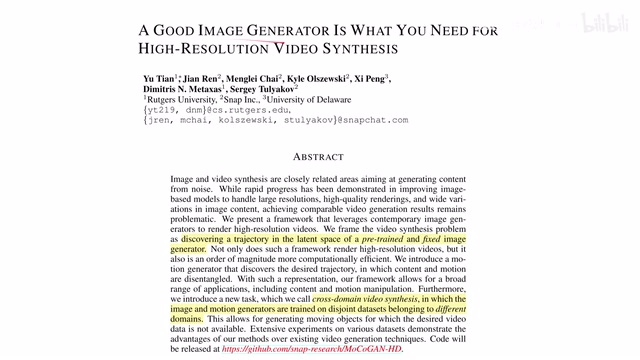
00:00:12–00:00:19 · 画面 00300:00:19–00:00:28 · 画面 004
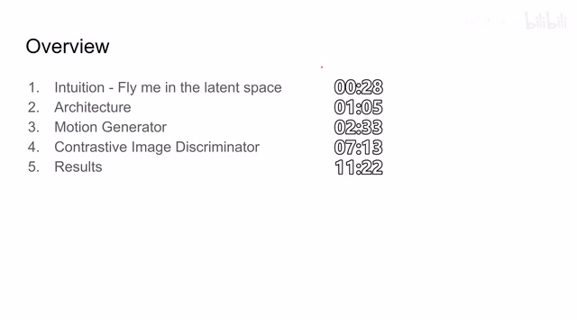
00:00:19–00:00:28 · 画面 00400:00:28–00:00:52 · 画面 005
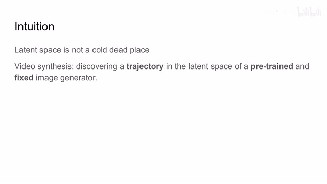
00:00:28–00:00:52 · 画面 005那么正如我们上一个视频里面所提到的那样我们通过调整 Latent Space 里面的 Latent Vector 可以生成各种各样的图像那么如果我们能够恰当的选择调整 Vector 的方向的话我们就可以有意的改变图像中的特定的部分那么假如对它的改变控制得当我们就可以获得一串这个 Video 所以本文的核心就是我们要找到一个 Trajectory 在 Latent Space 里面的 Trajectory 把它送到一个 train 好的这个 Image Generator 里面
00:00:52–00:00:53 · 画面 006
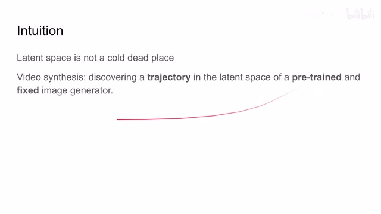
00:00:52–00:00:53 · 画面 00600:00:53–00:01:05 · 画面 007
00:00:53–00:01:05 · 画面 007这样呢我就能够得到一串生成好的高清的这个图像也就是一个高清的视频那么下面我们继续来看作者设计的这个网络中有哪些部件吧这里呢是作者提出的整个网络的结构看起来比较吓人呢我们一步步来看那么左边这部分呢是这个 Inference Network 就是我们真正用来生成视频的时候用到的这个网络那右边呢是与之相称的这个各种 Discriminator 那首先第一部分呢我们这里有一个 Motion Generator
00:01:05–00:01:10 · 画面 008
00:01:05–00:01:10 · 画面 00800:01:10–00:01:18 · 画面 009
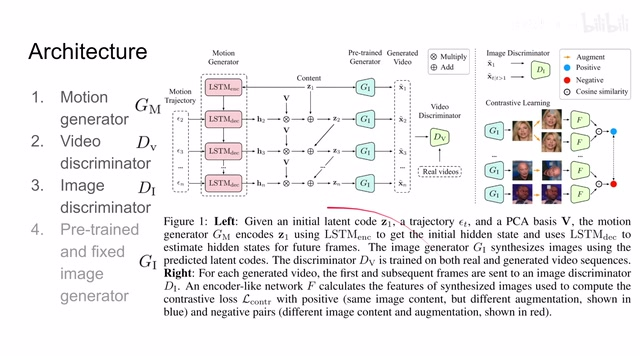
00:01:10–00:01:18 · 画面 00900:01:18–00:01:19 · 画面 010
00:01:18–00:01:19 · 画面 01000:01:19–00:01:33 · 画面 011
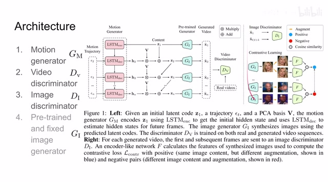
00:01:19–00:01:33 · 画面 011它呢就是最核心的帮我们生成这个 motion trajectory 然后呢我们通过一些手段把这个 motion 加到我们的这个 latent code 里面这样子呢再送到我们之前已经 train 好的现在不 train 的这么一个 image generator 里面我们就可以生成一连串的 video 那具体怎么加呢我们后面马上会介绍那么第二部分呢就是这个 video discriminator 那我直接生成的 video 它的质量不一定好啊
00:01:33–00:02:31 · 画面 012
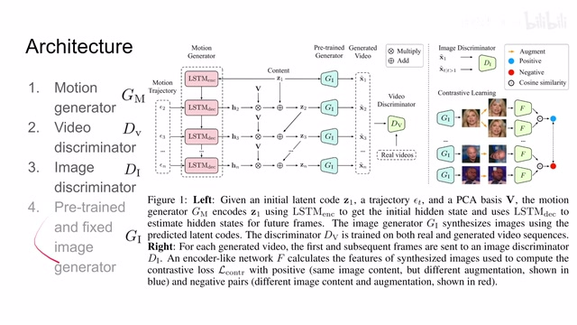
00:01:33–00:02:31 · 画面 012我想要改善它的质量最直接的方法就是我再加一个 video discriminator 就是一个传统的干的形式来帮我们提升这个 video 的质量这个是这一部分第三部分还有一个 image discriminator 这里你可以看到它的输入全部都是生成的图像只不过一个是第一帧一个是后续的几帧那么它的作用包括后面 contrastive learning 的作用我们在之后会介绍所以现在你只需要清楚我们的网络有 4 个部分motion generatorvideo discriminatorimage discriminator 还有 image generator 那么再次强调它是已经 tree train 好了的不需要再训练了那么下面我们就看怎么样通过 tree 这三个部件来实现这个 video synthesis 那么我们首先来看第一步 motion generatormotion generator 的作用是在我们的 latent space 里面预计这个 motion 的 trajectory 也就是说每一帧的 latent vector 它在这个 latent space 中应该怎么样移动
00:02:31–00:02:33 · 画面 013
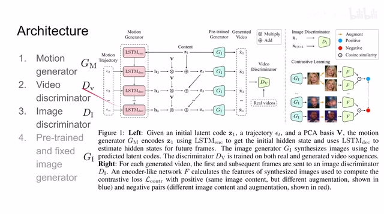
00:02:31–00:02:33 · 画面 01300:02:33–00:03:28 · 画面 014
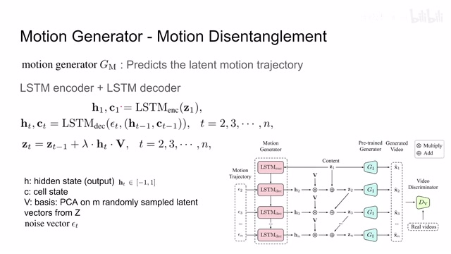
00:02:33–00:03:28 · 画面 014这里呢作者使用的是 LSTM encoder 加 decoder 这样一个形式那么视频的一开始呢我们给出一个 latent code 我们会用它生成第一任的图像那么这个 latent code 呢同时我们送到这个 LSTM 的 encoder 里面这个 encoder 呢会帮我们提取出这个 hidden state h 还有这个 cell state c 这里强调一下这个 hidden state 呢是我们 LSTM 的输出而这个 cell state 呢是这个 LSTM 中维持的一个中间的变量
之前我们的视频中可能有一些地方把这两个混淆了，这里特别纠正一下。那么随后随着时间的继续，我们先产生一个 motion trajectory。这个 trajectory 跟我们生成其他干 model 的时候一样，我们就是随机采样一个 vector。这 vector 我们叫它 noise vector，把它作为我们 generator input。同时我们要加上我们之前的 hidden state 和 cell state，就是上一时刻的这些状态。
00:03:28–00:03:29 · 画面 015
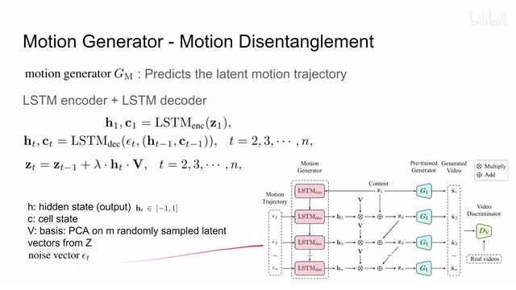
00:03:28–00:03:29 · 画面 01500:03:29–00:03:57 · 画面 016
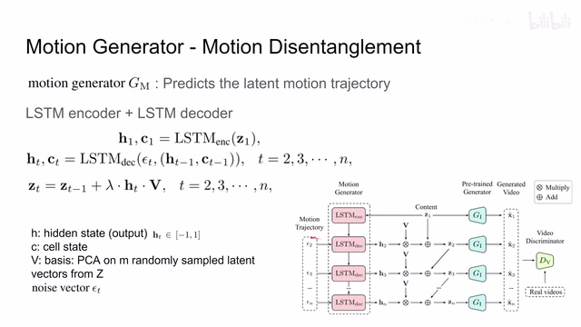
00:03:29–00:03:57 · 画面 016把这些变量一起送到我们的 LSTM decoder 里面，通过它来更新出这个时刻的 hidden state 和 cell state。这一看到拿到 hidden state 之后，我们把它和一个 v 相乘，然后乘上一个 lambda 这个系数，再加到我们上一时刻的这个 latent vector 里面。这样子就得到我们新的 latent vector。这个 vector 我们送到我们的 generator 里面，就可以生成这一只图像了。这个 v 这里我们可以称为 basis，它的产生是我们作者首先采了 m 个 latent vector。
00:03:57–00:03:58 · 画面 017
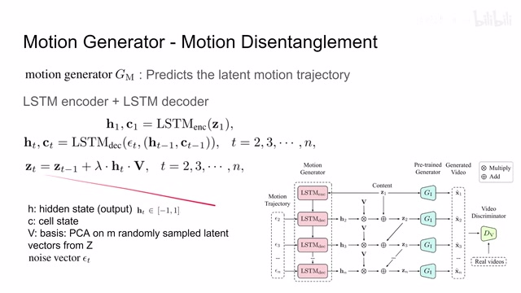
00:03:57–00:03:58 · 画面 01700:03:58–00:04:25 · 画面 018
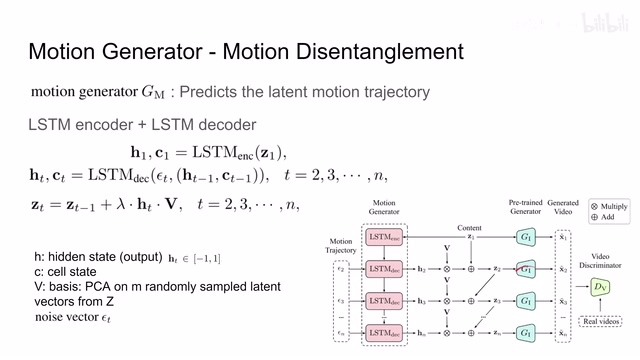
00:03:58–00:04:25 · 画面 018对这些 vector 呢做这个 PCA 做完 PCA 之后呢我们选择前面几个 principal component 他们呢就可以尽可能大的解释我们的这个 latent space 那么随后呢我们通过调整这些 basis 这些 principal components 我们就可以更加有效的在我们的 latent space 中呢进行运动那么这一块呢就是 motion generator 那这部分标题呢叫做 motion disentanglement
00:04:25–00:04:27 · 画面 019
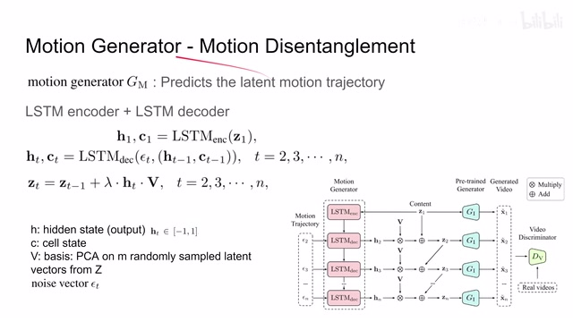
00:04:25–00:04:27 · 画面 01900:04:27–00:04:39 · 画面 020
00:04:27–00:04:39 · 画面 020也就是说我把图像的生成和这个视频中图像的运动呢给它拆分开来。那看到这里呢 slow fast network 点了一个赞啊。那么我们再往下看，我们如果仅仅把运动这一块提取出来呢，它对于训练一个 video generator 还是不够的。
00:04:39–00:05:01 · 画面 021
00:04:39–00:05:01 · 画面 021因为你想假说我的网络非常懒，实际上它就是非常懒，我每次就无视 motion trajectory 输出的 hidden state 接近于 0，每次我就是直接重复上一个时刻的 latent vector，我一样能够生成非常高质量的图像。只不过这个图像跟之前的所有人都长得差不多，甚至没什么变化。这时候弹幕有打了非静止画面。那么这种现象作者称为 motion collapse 运动的坍塌。那么为了规避这个问题，作者说我们需要最大化 virtual information。
00:05:01–00:05:05 · 画面 022
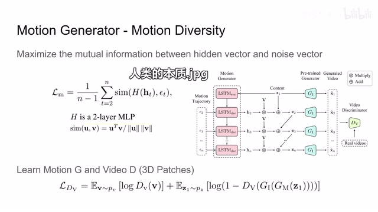
00:05:01–00:05:05 · 画面 02200:05:05–00:05:31 · 画面 023
00:05:05–00:05:31 · 画面 023就比如说 information 呢是这个 hidden vector 和这个 noise vector 之间的，也就是说我们要想办法让我们的 hidden vector 能够反映出这个 motion trajectory 它的变化。这样呢我们就能够保证 latent vector 呢它不是异常不变的，它是总共有点变化。那么为了最大化这个 virtual information 呢，这里作者设计了这样一个 loss。你可以看到呢他把这个 hidden state
00:05:31–00:05:32 · 画面 024
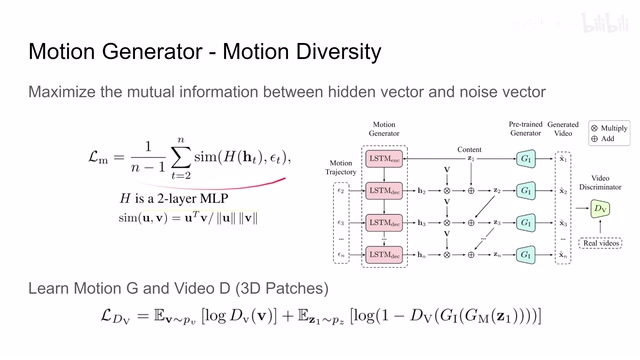
00:05:31–00:05:32 · 画面 02400:05:32–00:06:01 · 画面 025
00:05:32–00:06:01 · 画面 025送到了一个两层的 MLP 里面这个 MLP 叫做 H 然后得到这个投影之后呢跟我们输入的这个 motion trajectory 来做这个对比对比的方法呢就是两个向量的夹角就是 cosine similarity 那你身经百战呢在 BYOL 里面也是见得多了对吧那么加了这样一个 loss 之后呢我们把 H 和这个 y 他们之间的联系呢就建立起来了这样呢就使我们的 latent vector 不会说一成不变那么此外呢我们为了提高视频的质量
00:06:01–00:06:02 · 画面 026
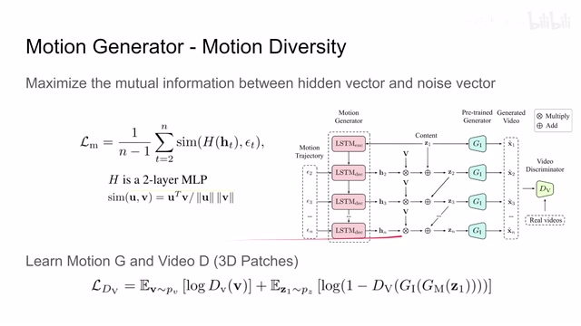
00:06:01–00:06:02 · 画面 02600:06:02–00:06:49 · 画面 027
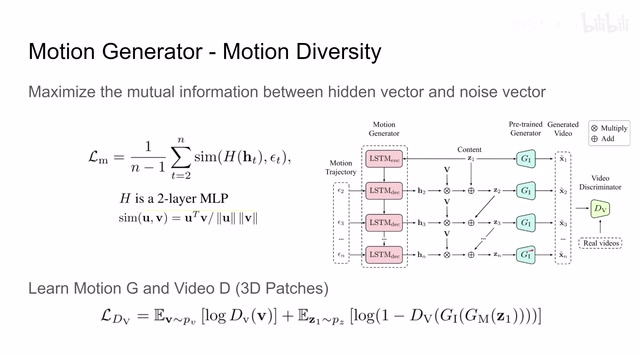
00:06:02–00:06:49 · 画面 027我们还是要像干一样来增加一个 discriminator 那这里呢作者使用了这个 PatchGAN 里面的思想如果呢这里呢是这个 3D patches 也就是说他把这个图像我们想都是 2D 的图像在时间轴上叠起来就变成一个 3D 的立方体然后呢把这个立方体切成相应的小块然后呢送到 3D convolution 里面然后呢一步一步的过这个 video discriminator 就可以了所以整个这样一个网络呢它也是一个干的形式你可以看到这里这个小微呢是真实的视频那么送到 discriminator 里面这个 z1 呢是我们初始的 latent code 送到 gm 里面生成一串的这个 latent vector 那么再送到 ji 里面生成了一串图像也就是一个 video 再送到这个 discriminator video 里面那么它呢应该是 fake video 那这样子呢一个 bce binary cross entropy
00:06:49–00:06:50 · 画面 028
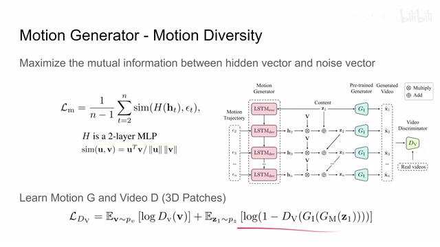
00:06:49–00:06:50 · 画面 028就是一个经典的 GAN 的训练的形式作为 discriminator 来说呢你想要尽可能的把这个 loss 给它降低而作为 generator 来说呢因为我们这个 ji 是锁死的我们这里呢关注的是这个 jm 他呢就希望我们这个 loss 呢变得非常大那么这一块呢就是我们的 inference network 就是我们实际在生成视频的时候跑的这个网络它的这个主要的结构以及它怎么训练那么然后呢我们看下一部分叫做 contrastive image discriminator
00:06:50–00:06:55 · 画面 029
00:06:50–00:06:55 · 画面 02900:06:55–00:06:56 · 画面 030
00:06:55–00:06:56 · 画面 03000:06:56–00:07:13 · 画面 031
00:06:56–00:07:13 · 画面 03100:07:13–00:09:13 · 画面 032
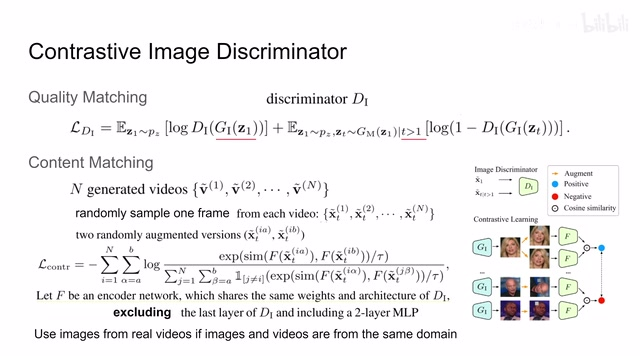
00:07:13–00:09:13 · 画面 032在这个环节里呢我们使用一个 image discriminator 来进一步的增加我们生成视频的质量那么通过哪些方法增加呢首先这里第一个叫做 quality matching 这一步的思想就是我生成的视频不能虎头蛇尾比如我的第一帧它可能是一个比较真实的这么一个图像但是随着我在这个 latent space 中的移动呢可能生成的图像呢就逐渐的变得失真了不是那么真实了所以呢这里作者把生成的第一帧图像作为 real image把后面生成的其他的图像作为 fake image 那么通过它构建一个 gun loss 的形式这样子就要求我们的 motion generator 生成的 latent code 不要不着边际要非常贴近原来的我们第一帧的图像的质量这个叫做 quality matching
那第二部分呢叫做 content matching 你从它字面的意思上很好理解就是说呢我后面生成的图像的内容至少说要跟前面第一帧图像的内容是同一个东西吧你不能视频跑着跑着它变成其他东西了那么为了达成这一点呢作者非常神奇的使用一个 contrastive loss 每个视频中呢我们随机的取上一帧标记为 x然后把同一张图像过两个随机的但是不同的图像增强得到了这两个样本然后就是我们喜闻乐见 contrastive loss 的环节这里用的是 cosine similarity 两个 feature 然后除以 temperature top 然后构成 InfoNCE loss 你看这里比较吓人它实际上就是 MoCo 的实现如果你对它不熟悉的话非常推荐你去翻看我们之前的视频这些我们都介绍过注意这里我们有一个不太清楚的东西叫做 F
它是一个 Encoder Network 把一幅图像投到我们的 Latent Space 里面注意这里它使用的参数大部分都是直接照搬 DI 也就是 Image Discriminator 除了最后一层因为 Image Discriminator 它最后是做了 classification 它是输出一个 node 我们这里不需要我们需要的是它的 feature然后得到这个 feature 之后再加上两层的 MLP 把它投到一个更高的 latent space 里面在这个 latent space 里面我们对比两个样本它们的相似程度那么显然相同一张图像产生了两个增强之后的图像它们应该在 latent space 里面其实非常接近的那么其他的这些 negative samples 就是其他视频中的图像它在 latent space 里面应该与这个 positive sample 相互远离那么这个就是 contrastive loss 的使用场景对比的就是这里那么此外作者还说
00:09:13–00:10:02 · 画面 033
00:09:13–00:10:02 · 画面 033如果说我们的 avg 和这个师傅的 video 呢他是不在一个 domain 里面那这个时候呢我们就不得不使用生成的视频来进行这个 contrastive learning 但是呢如果我们的图像和这个视频是同一个斗面里面的那我可以直接把真实视频中的这个图像呢拿出来做这个 contrastive learning 就可以了那么以上呢就是我们如何调教这个 contrastive image discriminator 这一部分呢帮我们更好的改善这个视频的图像的质量那么最后呢我们把所有的这些 loss 给它加起来我们最终要优化的目标呢就是长的这个样子那么这里呢我们最后再捋一遍一步步看
00:10:02–00:11:17 · 画面 034
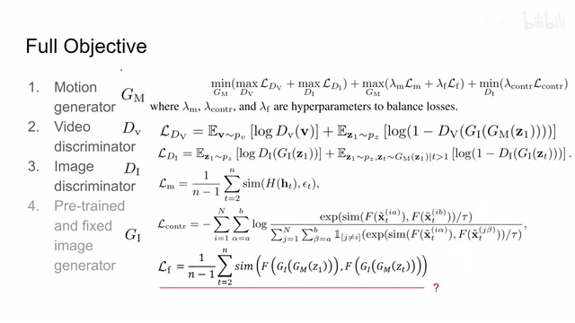
00:10:02–00:11:17 · 画面 034这个 LDV 就是 Video Discriminator 的 loss 呢是一个 GAN loss 这个 LDI 是 Image Discriminator 的 loss 那也是一个 GAN loss 我们之前呢已经讲过了这个呢负责 Quality Match 那接下来这个 ILM 呢是 Mutual Information让我们的 hidden state 和我们 input 的 noise 它们是有所联系再往下的 contrastive loss 它的作用就是让我们保证视频一串下来所有的图它们的内容是相互接近的最后这里我们还剩了一个 lf 它没有介绍这个 f 它叫做 feature matching loss 也就是说我的两个 feature 让它直接的相似这里作者没有提供实际的表达式它的代码也没有放出来
我们根据它的描述来猜测一下就是我们生成视频的第一人他在过了 f 之后在 latent space 里面 vector 要和我们后面生成的这些图像它在 latent space 里面 vector 它们要尽量的接近算是另一种形式的 contrastive loss 那么当然了这个表达式是我根据它的描述来写出来的不一定是真正它使用的 loss 所以我们这里有个问号那么总的来说呢我们只要把这个 loss 吹好吹这么一大串就可以得到我们想要的一个结果那么下面呢我们来看作者汇报一些结果吧首先是不同的数据集比如说 UCF101 还有这个 Face Forensics 那么这两个数据集我们看到这个 Inception Score 还有这个 FVD 因为我们是 video 嘛所以原来的 FID 变成了 FVD 那这里可以看到本文提出的方法呢是 outperform 之前的这一串方法的那这里呢也是那同时呢作者还引入了人类的主观评价
00:11:17–00:11:18 · 画面 035
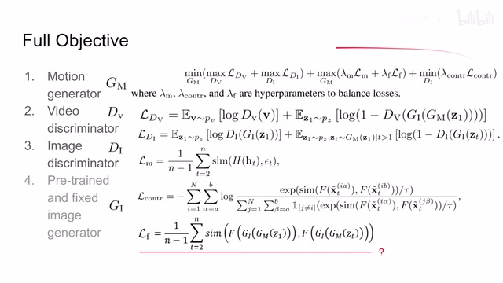
00:11:17–00:11:18 · 画面 03500:11:18–00:11:24 · 画面 036
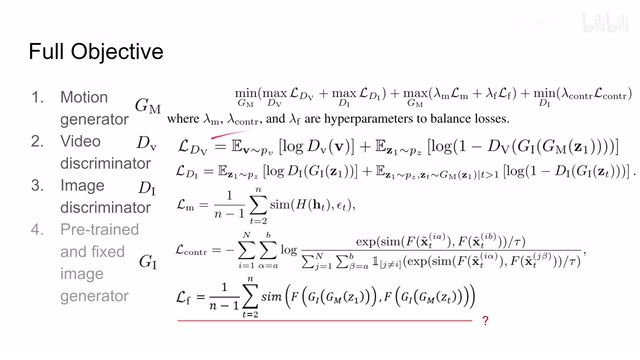
00:11:18–00:11:24 · 画面 03600:11:24–00:12:23 · 画面 037
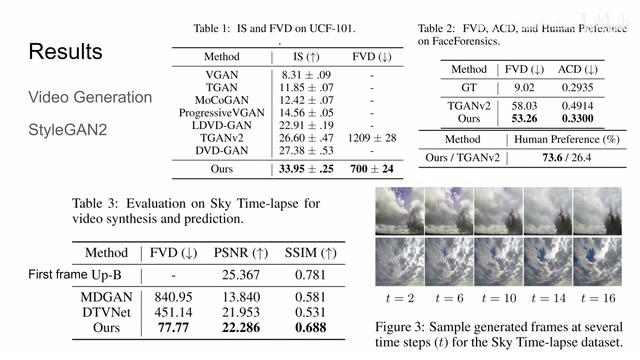
00:11:24–00:12:23 · 画面 037你可以看到这些人类已经决定了啊你的效果好那么再往下呢是这个 sky time lapse 这里呢作者直接变成 prediction 任务把我们的网络生成的图像呢跟 ground truth 还做比较那首先是 fad 这个是没有 ground truth 的可以看到本的方法呢就 outperform 之间的方法然后呢是对比 ground truth 我们的 psnrssim 等等那本文的方法显然效果更好这个 fb 表示 alpha bound，它是把我们图像的第一帧输进来作为我们 psnr 和 sim，它的可能达到了理论上的最高值，这边作者给我们选了几个例子，看起来效果还是很不错的，此外作者还汇报了 cross domain 的 video generation，这里我们的 avg generation 是在第一个数据集上进行了 pretrain，而我们的 motion 是在后面的数据集上做了 pretrain
00:12:23–00:12:32 · 画面 038
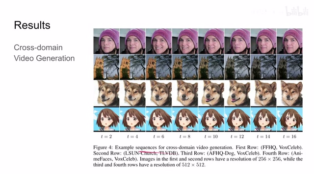
00:12:23–00:12:32 · 画面 03800:12:32–00:12:33 · 画面 039
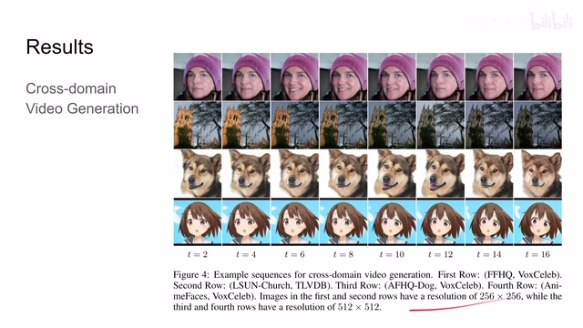
00:12:32–00:12:33 · 画面 03900:12:33–00:12:51 · 画面 040
00:12:33–00:12:51 · 画面 040那么把它两个结合起来发现依然能够得到有意义的这样一种图像那说明我们之前的 motion disentanglement 就是把运动和图像的语义区分开来这样工作的确实是成功了说到这里 SlowFast 又点了一个赞那么我们再往下看作者还汇报了一些 application 比如说这里我们的第一帧是使用了相同的 latent code 但是后面我们加上不同的 motion code 可以看到我们设成的序列是截然不同的
00:12:51–00:13:28 · 画面 041
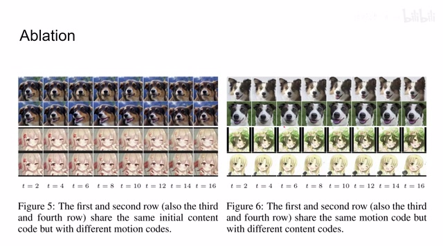
00:12:51–00:13:28 · 画面 041说明我们的 disentanglement 是有用的至少说我们前面关于 motion 的 noise 它是有一定效果能够影响我们最后的结果那么这一组我们是使用的不同的 initial code 然后使用相同的 motion code 你可以看到这两个视频它们的表达的语义的信息都是狗慢慢的张嘴还是很接近的那么包括这两组也是找一个左眼的动作通过这些例子可以看出本人的方法是能够 work 的
00:13:28–00:14:05 · 画面 042
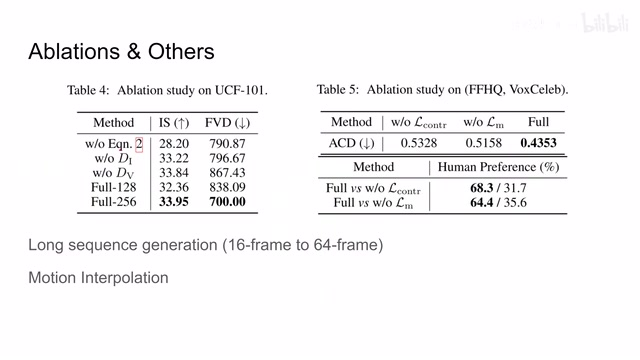
00:13:28–00:14:05 · 画面 042那么此外呢，作者还量化了汇报一些 ablation，比如说这个呢就是我们直接使用 stm 输出的 hidden state 作为我们的 latent code 来送进去，那这里呢去掉 image discriminatorvideo discriminator 等等等等，那你可以看到呢这些部件呢都是有用的，那么此外呢还有 image discriminator 里面的这些还有这个 mutual loss 啊等等，那对我们的性能呢都是有影响的，那此外呢作者还汇报一些长序列的生成，比如说原来我们长度是 16 的 video 变成 64 长度的 video
那么还有这个 motion interpolation，感兴趣的朋友呢欢迎去原文查看，好的，那么以上就是我对这篇论文的简单分析，感谢你的收看，再见
00:14:05–00:14:05 · 画面 043
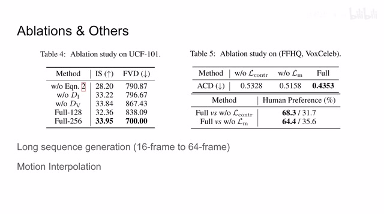
00:14:05–00:14:05 · 画面 043转写与来源说明 · 0 个自动复核提示
保留 35 个原始语音片段，0 个片段触发自动复核提示。提示仅用于定位可能的术语、重复或识别问题，不等于已确认错误。
讲解画面为源视频截图（640×360），不是可编辑 PPT 文件。全片按每秒 2 帧扫描内容变化，逐步展开页保留；连续动画保留代表画面。清晰度受源视频限制。
原视频：paper/合集_2026-10-16_内容生成/[论文简析]MoCoGAN-HD A Good Image Generator Is What You Need...[2104.15069].mp4
SHA-256：55438f38e2099fb5a03b1f6c5e20faa4b06b32f6120d3a2bd3f4852e0f203560
全文按视频语音与画面制作。原论文可从上方链接下载；完整资料包保留全文、原始逐字稿、字幕和校对记录。